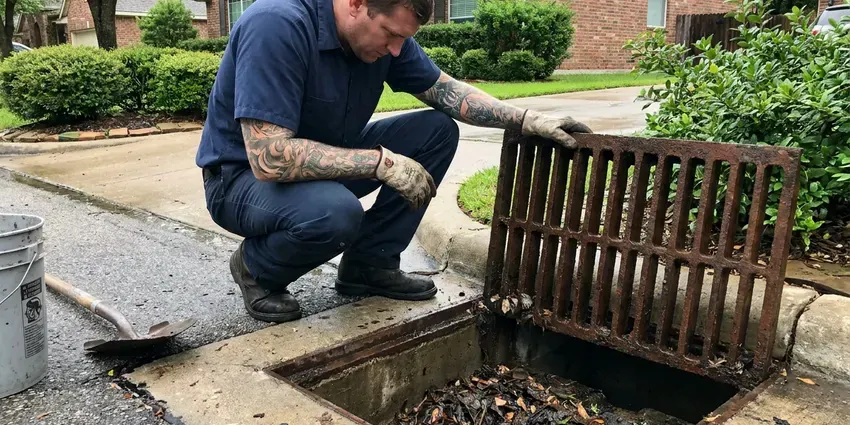

Plumbers Near Me in New Martinsville, WV
When you need reliable plumbers near me in New Martinsville, WV, GJK Plumbing is ready to help. We handle all plumbing issues for homes and businesses.
- Prompt, Reliable Service
- Warrantied Work
- Upfront Pricing
- Local West Virginia Experts
Licensed Plumbers On Call Today in New Martinsville, WV.
Contact us for prompt and professional plumbing solutions tailored to your home's needs.
Your Reliable Plumbers Near Me in New Martinsville, WV for Every Plumbing Need
GJK Plumbing provides full-service plumbing services across New Martinsville, WV. Our experienced technicians are equipped to address everything from leaky faucets and clogged drains to complex water heater issues and main line repairs.
Our expertise includes:
- Toilet, faucet, garbage disposal and fixture replacement
- Water heater, softener and pressure regulator installation and service
- Diagnose and repair all types of leaks.

Additional Plumbing Maintenance Services in New Martinsville, WV
Our maintenance and specialty plumbing services in New Martinsville, WV protect your home year-round and extend the life of every system.


Customers
Why Choose GJK Plumbing for Plumbers Near Me in New Martinsville, WV?
Choosing GJK Plumbing means partnering with a team that puts first your comfort and safety. We're dedicated to delivering high-quality plumbing services with transparent pricing and attentive customer care.
- Customer Satisfaction, Your peace of mind is our top priority, and we stand behind the quality of every plumbing service we perform.
- On-Time Arrival, We give you a real arrival window and call ahead when we are en route.
- Work Guaranteed, Our repairs carry a written workmanship guarantee.
Citywide Coverage
We are committed to providing fast and reliable plumbing services throughout all of New Martinsville, WV. Our extensive local coverage means we can respond efficiently to emergencies and scheduled appointments alike.
Experienced Team
Each plumber receives ongoing training on new fixtures, tankless water heaters and leak detection tools. That keeps their skills current with the products in West Virginia homes today.
Safety-First Approach
Safety is our priority in all our plumbing operations. We adhere strictly to all local and state plumbing codes in West Virginia, so every repair, installation, or maintenance service meets high safety and quality standards.
Trusted Certified New Martinsville Plumbing Services Professionals
At GJK Plumbing, we take pride in providing licensed, certified plumbing services throughout New Martinsville, WV. Backed by leading industry credentials, our experienced plumbers combine technical skill with genuine customer care. Whether it is repair, installation, or maintenance, we follow strict safety and quality standards to deliver long-lasting results you can trust.
Call Us Now PHCC Plumbing Contractor Recognition
PHCC Plumbing Contractor Recognition Better Business Bureau (BBB) Accreditation
Better Business Bureau (BBB) Accreditation Angi Certified Pro
Angi Certified Pro ISO 9001 Quality Management Certification
ISO 9001 Quality Management CertificationFull-Service Local Plumbing Services in New Martinsville, WV
Water Softener and Filtration Service in New Martinsville
Testing well water every year or so is a smart habit in West Virginia, especially after flooding or nearby ground disturbance. Hard water leaves scale on fixtures, inside water heaters and in pipes. We install and service water softeners, reverse osmosis drinking water systems and whole-house filters. Proper installation includes a bypass valve, drain connection and correct salt settings. Treated water helps your plumbing and appliances last years longer.

Emergency Plumbing Services in New Martinsville
Plumbing emergencies don't wait for business hours. Whether it's a burst pipe during a cold snap or a major sewer backup, our emergency plumbers are on call 24/7 to provide fast response. We arrive equipped with the necessary tools and parts to limit damage quickly and start repairs, preventing further costly issues for your home in New Martinsville.
Water Heater Services in New Martinsville
Reliable hot water is essential, and our plumbers handle both tank and tankless water heater services. We handle everything from routine maintenance and minor repairs, such as anode rod replacement or flushing sediment buildup, to complete new installations. Whether you're upgrading to a more energy-efficient tankless model or replacing an aging conventional unit, we make sure of proper sizing and installation according to New Martinsville's plumbing codes, for consistent hot water for your household.
Slab Leak Detection & Repair in New Martinsville, WV
Basements and crawlspaces are both common in West Virginia homes, and hillside lots often need thoughtful planning for sewer and drain routing. Slab leaks are a serious issue that can damage foundations. Our team uses non-invasive acoustic and thermal imaging equipment to pinpoint hidden leaks under your home's concrete slab. We then perform precise repairs, limiting disruption and protecting your foundation from costly long-term damage in New Martinsville, WV.
Commercial Plumbing Services in New Martinsville, WV
Businesses in New Martinsville, WV have unique plumbing needs. GJK Plumbing offers a full range of commercial plumbing services, including grease trap cleaning, commercial water heater installation, backflow prevention, and large-scale drain maintenance. We understand the importance of minimizing downtime for your business and provide efficient, reliable services tailored to commercial properties, so your operations run smoothly and comply with health and safety regulations.
Commercial Plumbing in New Martinsville, WV
GJK Plumbing extends its professional plumbing services to businesses and commercial properties throughout New Martinsville. We understand the demands of commercial plumbing systems, offering services from grease trap cleaning and backflow prevention to large-scale pipe repairs and fixture installations. Keep your business running smoothly with our reliable commercial plumbing solutions in New Martinsville, WV.
Leak Detection & Repair in New Martinsville
Even small leaks can cause significant damage over time, especially where humidity can speed mold growth. Our plumbers use advanced diagnostic tools like acoustic leak detectors and thermal imaging to locate hidden leaks in walls, floors, and underground pipes. We then provide precise, non-invasive repairs for everything from dripping faucets and toilet leaks to slab leaks and burst pipes, preventing further water waste and structural damage in your New Martinsville home.

Water Heater Repair and Replacement in New Martinsville
Testing well water every year or so is a good habit in West Virginia, especially after flooding or nearby ground disturbance. Hard water causes sediment to build up quickly in tank water heaters, shortening their life. We flush tanks, replace anode rods, thermocouples and elements and install new tank or tankless units. Our plumbers install brands such as Rheem, Bradford White, A. O. Smith, Navien and Rinnai. Every installation includes proper venting, expansion tank and code-required seismic strapping where needed.
Why Choose GJK Plumbing for Plumbers Near Me in New Martinsville, WV?
Being 'near me' isn't just about proximity, it's about understanding the needs of our New Martinsville community. From navigating local building codes to addressing local issues like water quality or soil movement, our plumbers are equipped with the knowledge and tools to deliver quality service right where you need it.
When you search for 'plumbers near me' in New Martinsville, you want a company that's truly local and responsive. GJK Plumbing is familiar with the plumbing infrastructure and issues that affect homes and businesses throughout New Martinsville, WV. We're not just a service provider, we're your neighbors too.
GJK Plumbing at a Glance
- Licensed and insured plumbers serving New Martinsville, WV
- 24/7 emergency service with same-day scheduling
- Upfront, flat-rate pricing before work begins
- 4.8-star rated by 832+ West Virginia customers
New Martinsville Map
New Martinsville Information
- Population
- 5,087
- Area codes
- Local
- Service area
- New Martinsville and communities within 40 miles
- Nearby
- Moundsville, Wheeling, Clarksburg, Fairmont
Damp basements and crawlspaces are common in New Martinsville and around the state, which can accelerate corrosion on pipes and fittings. Water quality and slab foundations can also put real strain on plumbing in New Martinsville, WV, so having a trusted local plumber on call protects your home.
Expert Services
Trust our professionals for reliable GJK Plumbing solutions in New Martinsville, WV.
Our Specialized Plumbing Services in New Martinsville, WV
At GJK Plumbing, we provide a complete range of plumbing services across New Martinsville, WV. From leak detection to full system installations, our team ensures fast, precise, and affordable service for both residential and commercial properties. Explore our core services below:


How Our Local Plumbing Service Visit Works in New Martinsville, WV
Here is what happens when you call us for plumbing help at your home or place of business.
Request a Quote
Call us at (681) 223-3607 or fill out our online form to schedule an appointment. We'll gather basic information about your plumbing issue and set up a suitable time for a technician to visit your New Martinsville home.
On-Site Diagnosis
A licensed plumber will arrive at your home, conduct a thorough inspection, and accurately diagnose the problem. They will explain their findings clearly and discuss all available repair or replacement options.
Upfront Pricing
Before any work begins, you'll receive a detailed, transparent quote outlining the cost of the service. We believe in no surprises, so you'll know the exact price for the plumbing work in New Martinsville.
Frequently Asked Questions About Plumbers Near Me in New Martinsville
Plumbing costs in New Martinsville can vary widely depending on the type and complexity of the service. A basic service call or minor repair, like a faucet drip, might range from $150-$300. More involved jobs, such as water heater replacement or slab leak repair, can range from $800 to several thousand dollars. We provide upfront, clear pricing after diagnosing the issue.
Yes, GJK Plumbing stands behind the quality of our work. We offer full warranties on both parts and labor for our plumbing services in New Martinsville, WV. Specific warranty details will be provided with your service agreement, for your peace of mind.
Common plumbing issues include mineral buildup in pipes and water heaters, slab leaks, root intrusion into sewer lines, and general wear and tear on older galvanized or cast iron pipes. Manufactured homes are common in rural West Virginia, and their plumbing often needs special attention to skirting, insulation and freeze protection. Our plumbers are experienced in addressing these local challenges.
Signs of a water leak include unusually high water bills, damp spots on walls or floors, unexplained puddles, the sound of running water when no fixtures are in use, or a musty odor. You can also check your water meter for movement when all water sources are off. If you suspect a leak, it's best to call a professional plumber to avoid more damage.
Backflow prevention devices are crucial for preventing contaminated water from flowing back into your clean drinking water supply. They are often required by local plumbing codes for commercial properties and certain residential systems, such as irrigation systems. Our plumbers can install, test, and repair these devices so your water remains safe and compliant with health regulations.
Testing well water every year or so is a good habit in West Virginia, especially after flooding or nearby ground disturbance. Hard water leaves mineral scale on faucets, showerheads and inside water heaters and pipes. Over time this reduces flow and shortens the life of fixtures and appliances. A water softener can help preserve your plumbing.
Water stains, low water pressure, rising water bills, slow drains and running toilets are common signs. Rust-colored water, a hissing water heater or sewer odors also deserve prompt attention. Catching problems early often keeps repairs smaller.
Hard water contains high levels of dissolved minerals like calcium and magnesium. Soft water has these minerals removed. Testing well water every year or so is a good habit in West Virginia, especially after flooding or nearby ground disturbance. Hard water can lead to mineral buildup in pipes and appliances, reduced soap lather, and dry skin. We can test your water in New Martinsville and recommend softening solutions.
What People Are Saying About Our Plumbing Experts?

Robert G.
The trenchless sewer replacement saved our front yard. They walked us through the camera inspection footage first so we knew exactly what we were paying for.
Sewer Line Replacement · Moundsville, WVJames P.
Our commercial plumbing system had a leak under the sink, and GJK Plumbing handled it professionally. The plumbers arrived quickly and restored everything without disruption to our customers.
Commercial Plumbing · Vienna, WV
Patricia H.
We had a slab leak that two other companies could not find. GJK Plumbing located it in under an hour, explained our options, and the price matched the quote to the dollar.
Slab Leak Repair · Fairmont, WV
Sofia M.
Two new toilets installed in one visit, no mess left behind, and the tech even adjusted a faucet he noticed was dripping. Fair pricing and really friendly.
Toilet Installation · Clarksburg, WVLaura S.
I scheduled a water heater replacement, and the team made the process smooth and affordable. The new unit works perfectly, and they cleaned up after completing the job.
Water Heater Replacement · Moundsville, WV
Emily R.
I called GJK Plumbing for plumbing repair, and the technician was fast, polite, and thorough. They explained the problem clearly and fixed it the same day. I will definitely hire them again. Highly recommended!
Plumbing Repair · New Martinsville, WV